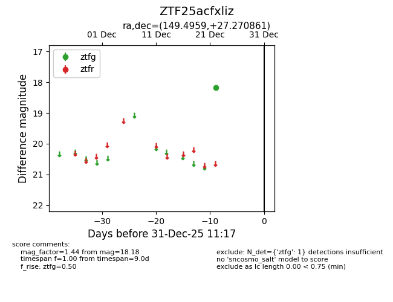
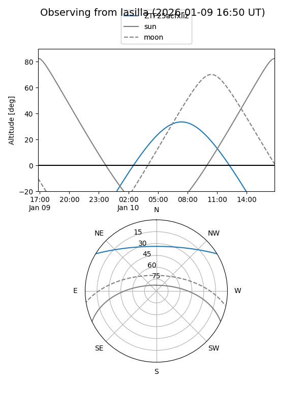
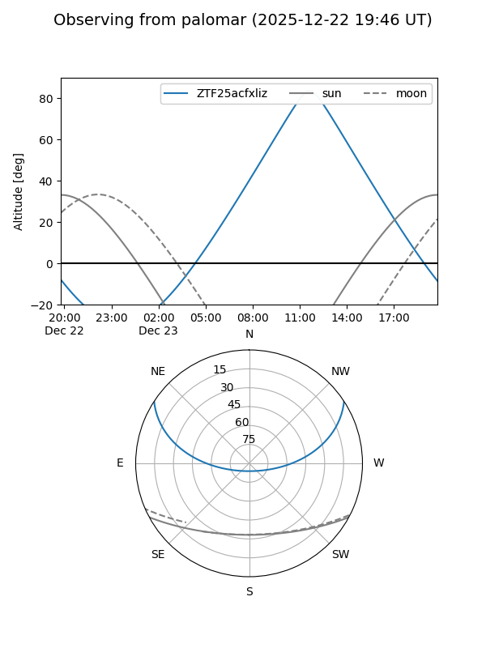

ZTF25acfxliz
Target ZTF25acfxliz at 2026-01-09 12:49
Aliases and brokers:
FINK: link
Lasair: link
ALeRCE: link
alt names
ZTF25acfxliz (ztf,fink_ztf)
Coordinates:
equatorial (ra, dec) = 149.4959,+27.27086
equatorial (HMS+DMS) = 09:57:59.01,+27:16:15.10
galactic (l, b) = (202.4303,+51.63238)
Flags:
Photometry:
last ztfg=18.18
1 ztfg detections
Lightcurve

Visibility


Additional plots